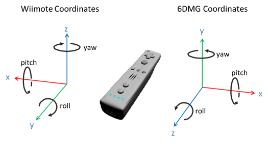

6 DOF Motion Tracking

The 6 DOF motion tracking is done by a hybrid of optical and inertial sensing. We use WorldViz PPT-X4 as the optical tracking system for position tracking and Wii Remote Plus (with built-in gyroscopes) for orientation tracking. The orientation is actually calculated with the fusion of angular speeds and accelerations.
A hybrid framework
In Listing 2, the data structures are self-explanatory. All the 3-element arrays store data in either the x-y-z- order or in the yaw-pitch-roll order. The orientation is stored in quaternion in the w-x-y-z order. In the Gesture struct, the bias and noise are the average and standard deviation of the angular speeds during the 5-second calibration.
What information is tracked and stored?
Listing 2. the data structures (slightly different from “GestureDef.h”)

6DMG uses a right-handed system. In Figure 1, we illustrate the conversion from Wiimote coordinates to 6DMG coordinates. Note that the position and orientation are measured in the world coordinates while the angular speeds and accelerations are in the device-wise coordinates. The raw accelerations and angular speeds from Wiimote are processed as in Listing 3 first before they are saved in the database.
Figure 1. the coordinates conversion from Wiimote to Ogre
Listing 3. convert the raw Wiimote data (via WiiYourslef!)


Copyright © 2012. School of Electrical and Computer Engineering,
Georgia Institute of Technology. All Rights Reserved.